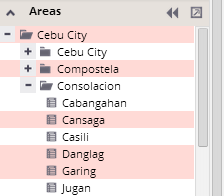
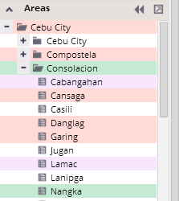

Selection of analytical units in a hierarchical tree
Click on the name of the unit in the tree and it will be selected and highlighted by the current selection color. For multiple selection, hold down the CTRL key during the selection.

More different multi-selections can be done via setting the selection colors in the color selection panel.

Selected units will be highlighted by corresponding selection colors. At the same time, they will be highlighted in the map and in all charts and tables in the visualization.
You can also select units of your interest in the map or chart panel. Find more on selection of units here.